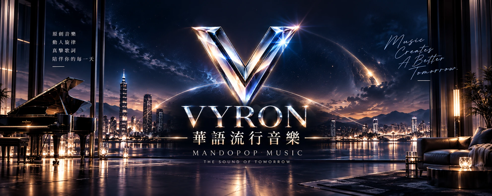

MANDOPOP MUSIC
VYRON 華語流行音樂
原創華語流行・動人旋律
ABOUT THE BRAND
VYRON 華語流行音樂
專注華語流行音樂、情感抒情與原創音樂影像。旗艦虛擬歌手陸以辰 LU YICHEN，以歌聲訴說愛情、思念與人生故事。
OFFICIAL VIDEO PICKS
官方推薦影片
最新影片整理中，歡迎先前往官方頻道觀看。

原創華語流行・動人旋律
專注華語流行音樂、情感抒情與原創音樂影像。旗艦虛擬歌手陸以辰 LU YICHEN，以歌聲訴說愛情、思念與人生故事。
最新影片整理中，歡迎先前往官方頻道觀看。